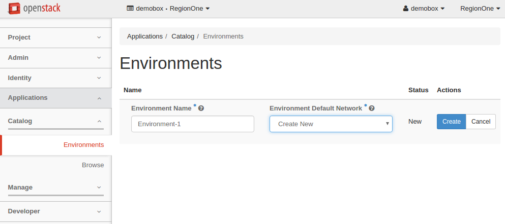

Managing environments¶
An environment is a set of logically connected applications that are grouped together for an easy management. By default, each environment has a single network for all its applications, and the deployment of the environment is defined in a single heat stack. Applications in different environments are always independent from one another.
An environment is a single unit of deployment. This means that you deploy not an application but an environment that contains one or multiple applications.
Using OpenStack dashboard you can easily perform such actions with an environment as creating, editing, reviewing, deploying, and others.
Create an environment¶
To create an environment, perform the following steps:
In OpenStack dashboard, navigate to Applications > Catalog > Environments.
On the Environments page, click the Add New button.
In the Environment Name field, enter the name for the new environment.
From the Environment Default Network drop-down list, choose a specific network, if necessary, or leave the default Create New option to generate a new network.
Click the rightmost Create button. You will be redirected to the page with the environment components.
{kind=link}
Alternatively, you can create an environment automatically using the Quick Deploy button below any application in the Application Catalog. For more information, see: Quick deploy.
Edit an environment¶
You can edit the name of an environment. For this, perform the following steps:
- In OpenStack dashboard, navigate to Applications > Catalog > Environments.
- Position your mouse pointer over the environment name and click the appeared pencil icon.
- Edit the name of the environment.
- Click the tick icon to apply the change.
Review an environment¶
This section provides a general overview of an environment, its structure, possible statuses, and actions. An environment groups applications together. An application that is added to an environment is called a component.
To see an environment status, navigate to . Environments may have one of the following statuses:
- Ready to configure. When the environment is new and contains no components.
- Ready to deploy. When the environment contains a component or multiple components and is ready for deployment.
- Ready. When the environment has been successfully deployed.
- Deploying. When the deploying is in progress.
- Deploy FAILURE. When the deployment finished with errors.
- Deleting. When deleting of an environment is in progress.
- Delete FAILURE. You can abandon the environment in this case.
Currently, the component status corresponds to the environment status.
To review an environment and its components, or reconfigure the environment, click the name of an environment or simply click the rightmost Manage Components button.
On the Components tab you can:
Add or delete a component from an environment
Send an environment to deploy
Track a component status
Call murano actions of a particular application in a deployed environment:
For more information on murano actions, see: Murano actions.
On the Topology, Deployment History, and Latest Deployment Log tabs of the environment page you can view the following:
- The application topology of an environment. For more information, see: Application topology.
- The log of a particular deployment. For more information, see: Deployment history.
- The information on the latest deployment of an environment. For more information, see: Latest deployment log.
{kind=link}